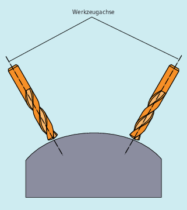
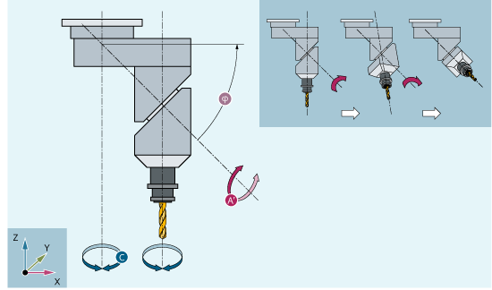
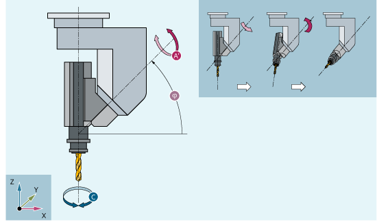
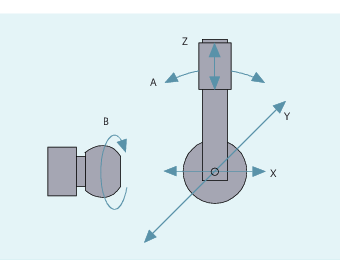

Um optimale Schnittbedingungen beim Bearbeiten räumlich gekrümmter Flächen zu erzielen, muss der Anstellwinkel des Werkzeugs veränderbar sein.
Mit welcher Maschinenkonstruktion dies erreicht wird, ist in den Achsdaten hinterlegt.
Hier legen drei Linearachsen (X, Y, Z) und zwei Orientierungsachsen (C, A) den Anstellwinkel und Arbeitspunkt des Werkzeugs fest. Eine der beiden Orientierungsachsen ist als Schrägachse angelegt, hier im Beispiel A' - in vielen Fällen als 45°-Anordnung.
Kardanischer Werkzeugkopf Variante 1
In den hier gezeigten Beispielen sehen Sie die Anordnungen am Beispiel mit dem Kardanischen Werkzeugkopf der Maschinenkinematik CA!
Die Achsfolge der Orientierungsachsen und die Orientierungsrichtung des Werkzeugs kann abhängig von der Maschinenkinematik über Maschinendaten eingestellt werden (→ Maschinenhersteller).
In diesem Beispiel liegt A' unter dem Winkel φ zur X-Achse
Allgemein gelten folgende mögliche Zusammenhänge:
A' liegt unter dem Winkel φ zur | X-Achse |
B' liegt unter dem Winkel φ zur | Y-Achse |
C' liegt unter dem Winkel φ zur | Z-Achse |
Der Winkel φ kann im Bereich 0° bis +89° über Maschinendaten projektiert werden.
Hierbei handelt es sich um eine Anordnung mit bewegtem Werkstück und bewegtem Werkzeug. Die Kinematik setzt sich aus drei Linearachsen (X, Y, Z) und zwei rechtwinklig angeordneten Drehachsen zusammen. Die erste Rundachse wird z. B. über einen Kreuzschlitten von zwei Linearachsen bewegt, das Werkzeug steht parallel zur dritten Linearachse. Die zweite Drehachse dreht das Werkstück. Die dritte Linearachse (Schwenkachse) liegt in der Ebene des Kreuzschlittens.
Die Achsfolge der rotatorischen Achsen und die Orientierungsrichtung des Werkzeugs kann abhängig von der Maschinenkinematik über Maschinendaten eingestellt werden.
Es gelten folgende mögliche Zusammenhänge:
Achsen: | Achsfolgen: |
|---|---|
1. Rundachse | A A B B C C |
2. Rundachse | B C A C A B |
Geschwenkte Linearachse | Z Y Z X Y X |
Weitere Informationen zu konfigurierbaren Achsfolgen für die Orientierungsrichtung des Werkzeugs siehe Funktionshandbuch Transformationen.